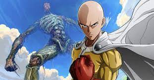
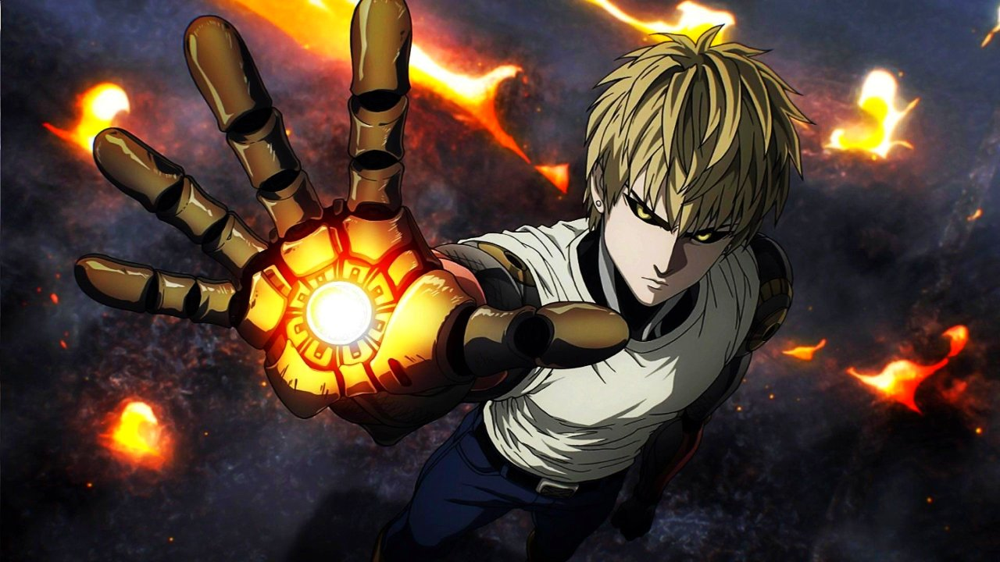
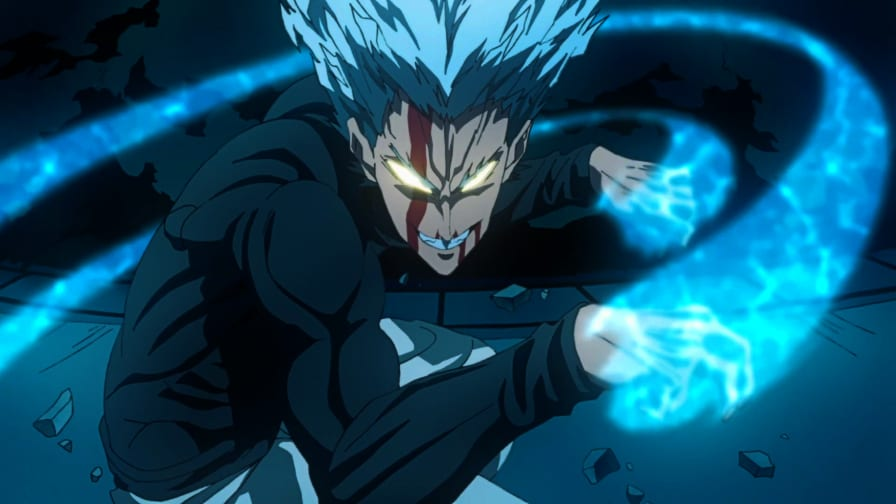
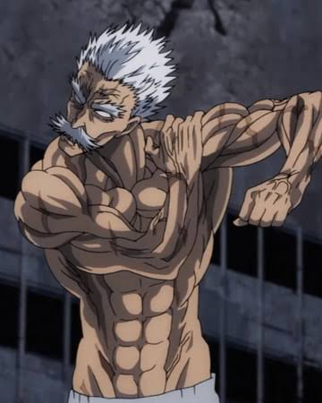
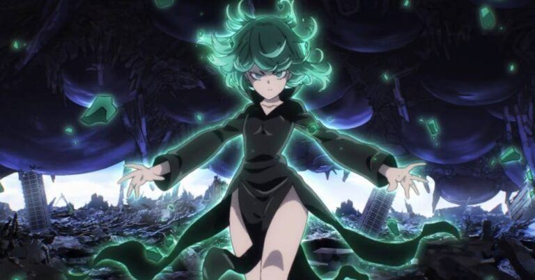

One Punch-Man conta a história de Saitama, um super-herói extremamente poderoso, que se entediou com a ausência dos desafios nas suas lutas contra o mal e procura encontrar um oponente digno. Capa do primeiro volume de One Punch-Man, manga adaptado por Yusuke Murata, mostrando o protagonista Saitama.
Temporadas
Temporada 1
A jornada de Saitama não é a de busca de poder, mas a de sair do estado de tédio e buscar algo que o motive. Quando descobre a Associação dos Heróis, ele se empolga pois há ali a possibilidade de desafios, de reconhecimento, de objetivo.
Temporada 2
Diferente do que vimos anteriormente, quando Saitama (Makoto Furukawa) destruiria qualquer inimigo com um soco, o descartando da trama em seguida, o humano autointitulado criatura segue presente na história e em busca de se tornar cada vez mais poderoso mesmo após ser derrotado pelo protagonista.-
Personagens

Saitama
Saitama é careca e o homem mais forte de Z. Após ter realizado treinos exaustivos,
escolheu combater o crime apenas para se divertir e está em busca de oponentes a
sua altura.

Genos
Genos (ジ ェ ノ ス, Jenosu) é o deuteragonista de One-Punch Man. Ele é um cyborg de 19 anos e discípulo de Saitama. Ele está sempre com o objetivo de se tornar mais forte e lutar pela justiça. Sob a Associação de Heróis, é conhecido como Cyborg Demônio(鬼 サ イ ボ ー グ, Oni Saibōgu) e é o herói da classe S Rank 14.

Garou
Garou (ō ロ Gar, Garō; Viz: Garo) é um ex-discípulo de Bang que foi expulso de seu dojo por arrumar briga. Por causa de seu fascínio por monstros e seu ódio por heróis, ele é comumente chamado de Monstro Humano e Caçador de Heróis. Sitch of the Hero Association o vê como uma grave ameaça à organização, apesar de ser apenas um humano.

Bang
Bang (バング, Bangu ), também conhecido por seu apelido de herói, Silver Fang (シルバーファング, Shirubā Fangu ), é um mestre de artes marciais , criador e professor do Water Stream Rock Smashing Fist , e anteriormente um herói profissional . Ele era anteriormente o terceiro herói da Classe S mais bem classificado da Hero Association e foi reconhecido como um de seus heróis mais poderosos. Ele está atualmente estabelecido em Z-City . Em sua juventude, ele foi apelidado de Vento de Sangue (血の風, Chi no Kaze ; Viz: BloodWind ).

Tatsumaki
Tatsumaki (タツマキ, Tatsumaki ; Viz: Tornado ), também conhecida por seu pseudônimo de herói Tornado do Terror (戦せん慄りつのタツマキ, Senritsu no Tatsumaki ; Viz: Terrible Tornado ), é o herói profissional Classe S Rank 2 da Hero Association . Ela é reconhecida como uma das heroínas mais poderosas da Hero Association. [4] [5] Ela é uma esper e a irmã mais velha e professora autodeclarada de Fubuki . Ela e sua irmã são conhecidas como as Irmãs Psíquicas (エスパー姉妹, Esupā Shimai ).